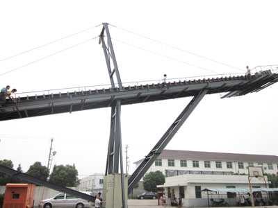

缅甸客户来访上海谷邦
2011年8月10日，来自缅甸的客户仰光巴图矿业公司一行5人到访上海谷邦，进行为期三天的实地考察，旨在对其原有工业输送设备进行更新换代，以满足其即将开始的大规模的矿山开采项目及矿山输送工程。

来访期间，客人重点参观了位于浦东新区的上海谷邦总部以及位于浦东工业园区的现代化的生产基地，对上海谷邦的企业规模以及技术实力给予了极大的肯定。同时，对拟采购的工业输送设备进行了现场演示，对上海谷邦工业输送设备优异的配置、卓越的性能以及便捷的操作等夸赞不已，双方当场达成了采购意向，并表示回国后立即着手实施相关采购工作。
作为中国的邻邦，大选改制后的缅甸进入了经济发展的快车道，其基础设施建设也相应进入跨越式发展阶段。此次缅甸客户来访，不但加深了彼此间的沟通，明确了缅甸市场的需求，为上海谷邦工业输送设备系列产品更多地进入缅甸市场，进而进一步扩大在东南亚的市场份额提供了难得的发展机遇。